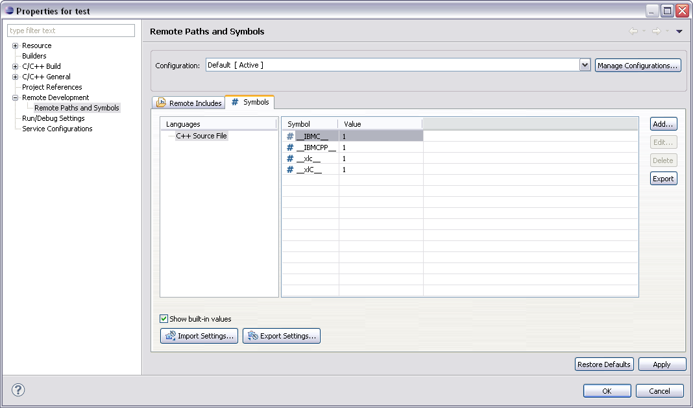

Symbols are passed to the remote indexer and are used during preprocessing.
A symbol is essentially the same thing as an object-like macro. For example:
#define SYMBOL 1
If the remote builder has been configured properly then RDT may be able to automatically determine the symbols that are "built-in" to the compiler on the remote machine.
Additional symbols may be provided in order to have the preprocessor
behave differently for different build configurations. For example if
there is a "Debug" build configuration it may be desirable to define a symbol
named DEBUG. Preprocessor branches controlled by this symbol will
then become active. For example:
#ifdef DEBUG
// debugging code, becomes active if DEBUG is defined
#endif
It may take some time to initially set up the symbols and other project settings. In order to avoid having to perform this task for multiple RDT installations an import/export mechanism is provided to allow these settings to be easily shared.

Clicking Add on the Symbols properties page will cause the Add Symbol dialog to appear. Enter the name of the symbol and optionally a value. The name must be a valid identifier as understood by the C/C++ preprocessor.
Check the Add to all configurations checkbox to add the symbol to all build configurations, otherwise the symbol will only be added to the build configuration that was selected on the properties page.
Check the Add to all languages checkbox to add the include path to all languages, otherwise the symbol will only be added to the language that was selected on the properties page.